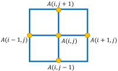
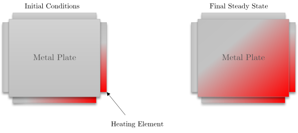

- Programming …
Project
Heat propagation in metals
Laplace’s equation is a second-order partial differential equation used to solve problems in multiple branches of science such as electrostatics, fluid dynamics, heat conduction, etc.
In its most basic form it can be expressed as follows: $$\nabla^2f(x,y)=0 $$
In particular, to solve propagation and simulation problems, the Jacobi iteration is proposed. This iteration establishes that the Laplace equation is applied in a matrix of points, with each point being an average of its adjacent points. Consequently, it is possible to converge to a state by iteratively computing new values for each point in the matrix using the average of the adjacent points. The following image shows the calculation of a given point using the adjacent point’s value in each Jacobi iteration:

$$A_{k+1}(i,j)=\frac{A_k(i-1,j)+A_k(i+1,j)+A_k(i,j-1)+A_k(i,j+1)}{4} $$
This way, to calculate the value \(A(i, j)\) of the iteration \(k+1\), the average value of its adjacent points is calculated from the iteration \(k\).
In this project, you must implement a simulator of heat propagation in metals. Suppose that there exists a metal of given dimensions to which a heat source is applied at one of its ends. As time passes, the heat begins to spread through the metal until it reaches a stable final state. This behavior can be modeled using Jacobi iterations and the Laplace equation described above. The following figure shows a graphic representation of the initial state of a metal plate and the stable final state after the heat has fully propagated.

The metal plate can be computationally modeled by using a matrix of values that indicate the temperature of each of its points. However, the calculation to perform the heat propagation simulation will take a relatively long time to compute sequentially, since hundred of iterations must be performed with the calculation of the average of the adjacent points. Because of this, you are required to implement a parallel solution using DPC++.
The main calculation used to compute the simulation is given by the following sequential code:
// Iterate until reaching a stabilized state or maximum number of iterations
while ( dt > MAX_TEMP_ERROR && iteration <= max_iterations ) {
// Main calculation:
// For each position of the matrix calculate the average of the neighbors
for(i = 1; i <= ROWS; i++) {
for(j = 1; j <= COLUMNS; j++) {
Temperature[i][j] = 0.25 * (Temperature_last[i+1][j] + Temperature_last[i-1][j] +
Temperature_last[i][j+1] + Temperature_last[i][j-1]);
}
}
dt = 0.0; // Reset largest temperature difference
// Copy matrix and find the maximum heat difference
for(i = 1; i <= ROWS; i++){
for(j = 1; j <= COLUMNS; j++){
dt = fmax( fabs(Temperature[i][j]-Temperature_last[i][j]), dt);
Temperature_last[i][j] = Temperature[i][j];
}
}
}
The while loop controls the end of the Jacobi iteration, and it will continue iterating as long as a heat stability level is not reached (dt> MAX_TEMP_ERROR) and the maximum number of iterations is not reached (iteration <= max_iterations). The internal for structures correspond to calculations that must be parallelized. The first nested for computes the average of the adjacent points for each position in the array, and the second nested for copies the newly computed values between arrays and finds the maximum heat difference between the previous and current iteration. Note that when parallelizing the search for the maximum heat change in the second nested for, all threads must update the dt variable, so it is necessary to use some reduction and/or synchronization technique.
Your implementation must use techniques available in DPC++ to speed up the processing on Multi-core CPUs, GPUs, or FPGAs. To achieve this consider the following:
- Buffer declarations for data storage.
- Parallelize the process by using
parallel_for,range, andnd_range. - Data synchronization in data shared by multiple threads.
Implementation and Submissions
- This project can be done in teams of at most two members.
- The submission is to be uploaded using Github Classroom.
- The initial code includes a sequential version of the problem. The solution must be implemented inside the
laplace_parallelfunction using DPC++. - The implementation must consider two main goals:
- The calculation of the temperature difference must be correct.
- The implementation must be more efficient performance-wise than the sequential implementation. The performance is measured using the execution time of the simulations.
- When evaluating submissions, a ranking will be made sorted by the most efficient implementations. - This will be considered to mark the final grade.
- Submission dates:
- First submission:
- Simulation implementation using DPC++ working properly.
- Tuesday 11:59 PM, November 30th, 2021.
- Final submission:
- Simulation implementation using DPC++ working properly with performance improvements.
- Thursday 11:59 PM, December 23rd, 2021.
- First submission:
Reference: Problem adapted from John Urbanic’s materials.